This article retains its original experiments and examples. For current package usage, see the usage guide.
Most of the docs illustrating the use of smallvis use
some relatively small datasets which have been used elsewhere or are
otherwise convenient to chuck a dimensionality reduction algorithm at.
Two plots are shown for each dataset: the PCA results, using the first
two principal components, and the results of running t-SNE with some
standard parameters taken from the t-SNE
paper. This should demonstrate that, in most cases, PCA does a
fairly bad job of visualizing the data, and t-SNE does a substantially
better job.
Iris
The famous iris dataset, as given in R’s
datasets package. 150 observations and 4 features.
Observations are colored by species. This a very low dimensional dataset
that certainly doesn’t need t-SNE applied to it. Very convenient for
sanity checking, though. It’s worth noting that the version of this
dataset from the UCI repository
contains a few errors, and these are also (as of February 2018) shared
by scikit-learn.
iris_tsne <- smallvis(
iris,
scale = FALSE,
perplexity = 40,
Y_init = "spca",
eta = 100,
exaggeration_factor = 4
)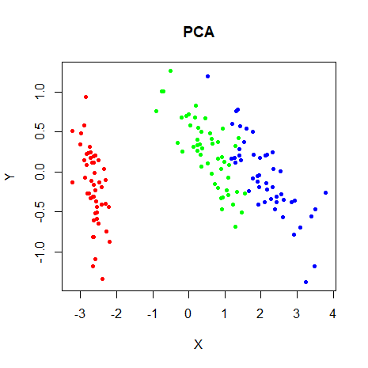 |
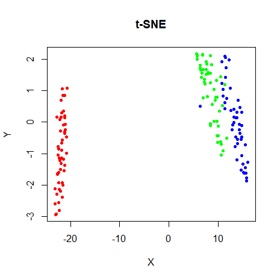 |
s1k
A synthetic dataset consisting of a fuzzy 9D simplex made of ten roughly-equally spaced isotropic clusters. Created for the sneer package and designed to be too high-dimensional to produce a good result by reproducing distances. 1000 observations and 9 features. Observations are colored by the cluster they belong to. A good embedding would show ten round but fuzzy clusters.
devtools::install_github("jlmelville/sneer")
library(sneer)
s1k_tsne <- smallvis(
s1k,
scale = FALSE,
perplexity = 40,
Y_init = "spca",
eta = 100,
exaggeration_factor = 4
)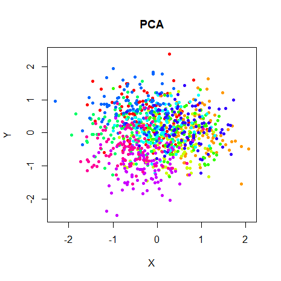 |
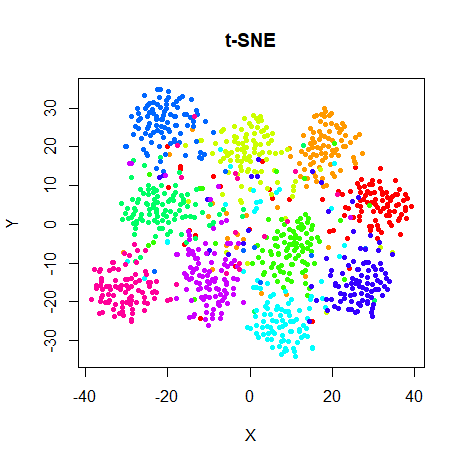 |
Olivetti Faces
The ORL Database of Faces, consisting of forty different people’s faces, with ten images per person. Installed via the snedata package, which defers to the RnavGraphImageData package for the heavy lifting. 400 observations and 4096 features. Observations are colored according to the face they represent.
install.packages("RnavGraphImageData")
library(RnavGraphImageData)
devtools::install_github("jlmelville/snedata")
oli <- snedata::olivetti_faces()
oli_tsne <- smallvis(
oli,
scale = FALSE,
perplexity = 40,
Y_init = "spca",
eta = 100,
exaggeration_factor = 4
)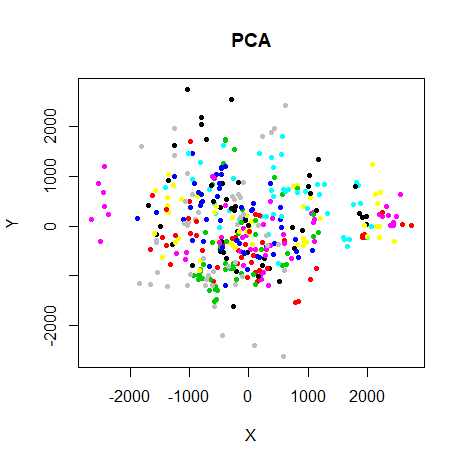 |
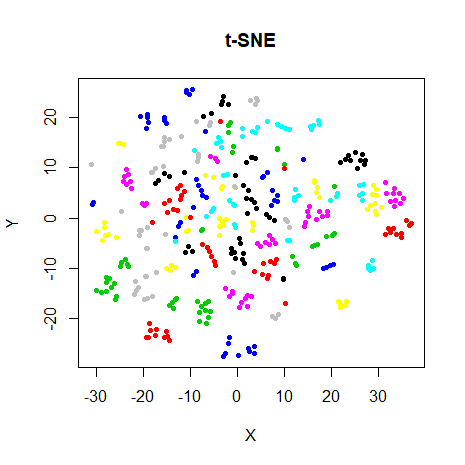 |
Frey Faces
2000 consecutive images of Brendan Frey’s face, taken from video footage. Seems to originate from Saul Roweis’ page. 2000 observations and 560 features. This is the one dataset without any categories for the points. Instead, the color of the point represents its position in the 2000 frames, colored by a rainbow scheme. Early frames are colored red, and then progress through green to blue and so on.
Like the Olivetti Faces, installed using the snedata package, via RnavGraphImageData
install.packages("RnavGraphImageData")
library(RnavGraphImageData)
devtools::install_github("jlmelville/snedata")
frey <- snedata::frey_faces()
frey_tsne <- smallvis(
frey,
scale = FALSE,
perplexity = 40,
Y_init = "spca",
eta = 100,
exaggeration_factor = 4
)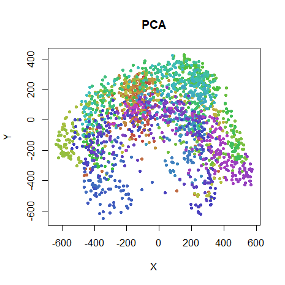 |
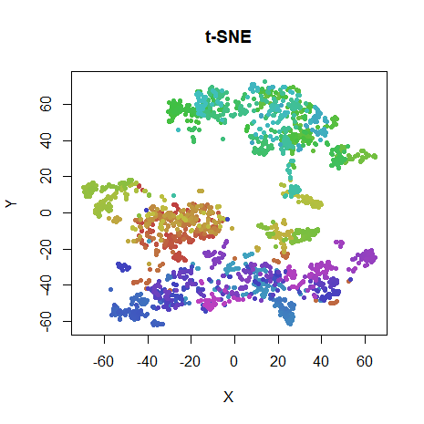 |
COIL-20
The Columbia Object Image Library: images of 20 objects, with 72 poses each. 1440 observations with 16384 features. Each observation is colored by the object it is an image of.
Installed using the coil20 package.
devtools::install_github("jlmelville/coil20")
# For some reason it takes ages to unzip the downloaded file on my machine
# so be patient
coil20 <- coil20::download_coil20(verbose = TRUE)
coil20_tsne <- smallvis(
coil20,
scale = FALSE,
perplexity = 40,
Y_init = "spca",
eta = 100,
exaggeration_factor = 4
)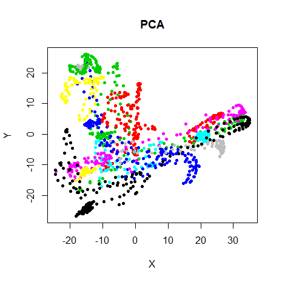 |
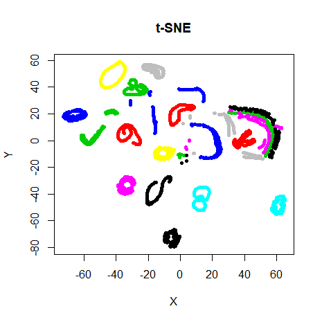 |
MNIST (6,000)
A subset of the MNIST database of handwrittens digits, images of handwritten digits from 0-9.
Downloaded using the snedata package and 6,000 examples were sampled randomly, with 600 examples per digit:
devtools::install_github("jlmelville/snedata")
mnist <- snedata::download_mnist()
install.packages(c("dpylr", "magrittr"))
library("dplyr")
library("magrittr")
mnist6k <- sample_n(mnist %>% group_by(Label), 600)
mnist_tsne <- smallvis(
mnist6k,
scale = FALSE,
perplexity = 40,
Y_init = "spca",
eta = 100,
exaggeration_factor = 4
)6,000 observations and 784 features. Observations are colored by the digit they represent.
t-SNE (among other methods) does a pretty good job at separating the digits, even in 2D. MNIST is considered to be quite an easy dataset to do well at in various machine learning tasks.
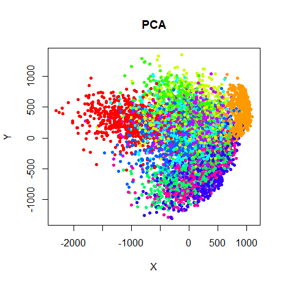 |
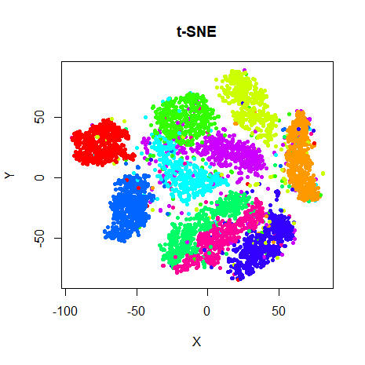 |
Fashion (6,000)
A subset of the Fashion MNIST database, designed to be similar to the MNIST digits database, but using images of fashion items. Once again downloaded using the snedata package the same procedure as for the MNIST dataset was used to sample 6,000 images, 600 per object class.
6,000 observations and 784 features. Observations are colored by the fashion item they represent (one of T-shirt/top, trousers, pullover, dress, coat, sandal, shirt, sneaker, bag or ankle boot).
Note that the Fashion MNIST is designed to be a lot tougher for machine learning methods to work well on compared to the MNIST digits. And I’ve not seen any method do a great job on this dataset (or a subset). The classes may not be easily separable in two dimensions.
fashion <- snedata::download_fashion_mnist()
install.packages(c("dpylr", "magrittr"))
library("dplyr")
library("magrittr")
fashion6k <- sample_n(fashion %>% group_by(Label), 600)
fashion_tsne <- smallvis(
fashion6k,
scale = FALSE,
perplexity = 40,
Y_init = "spca",
eta = 100,
exaggeration_factor = 4
)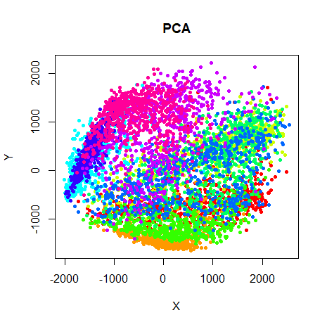 |
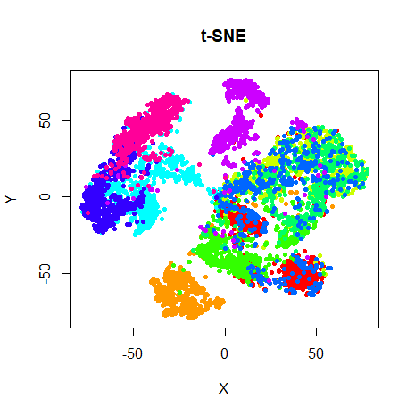 |